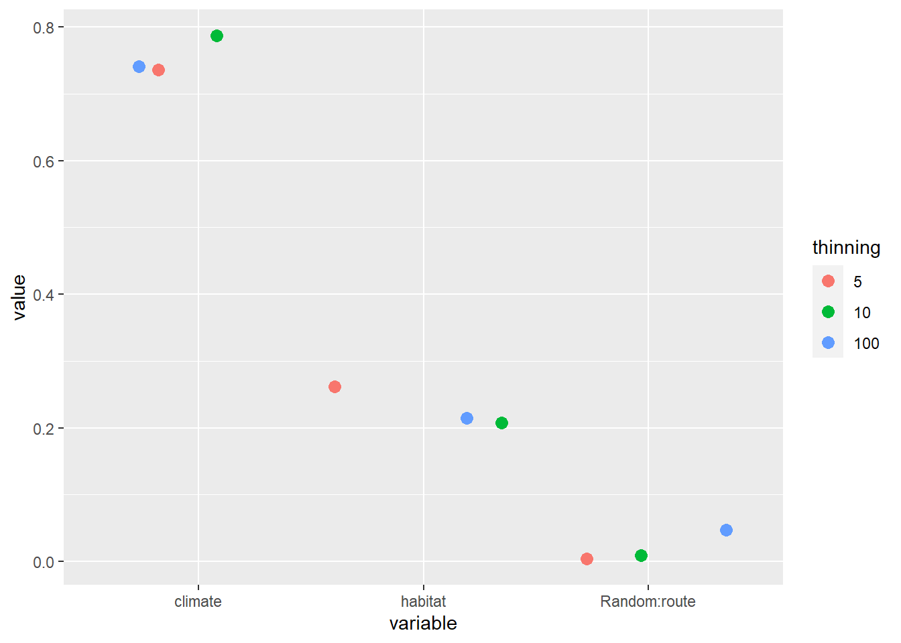
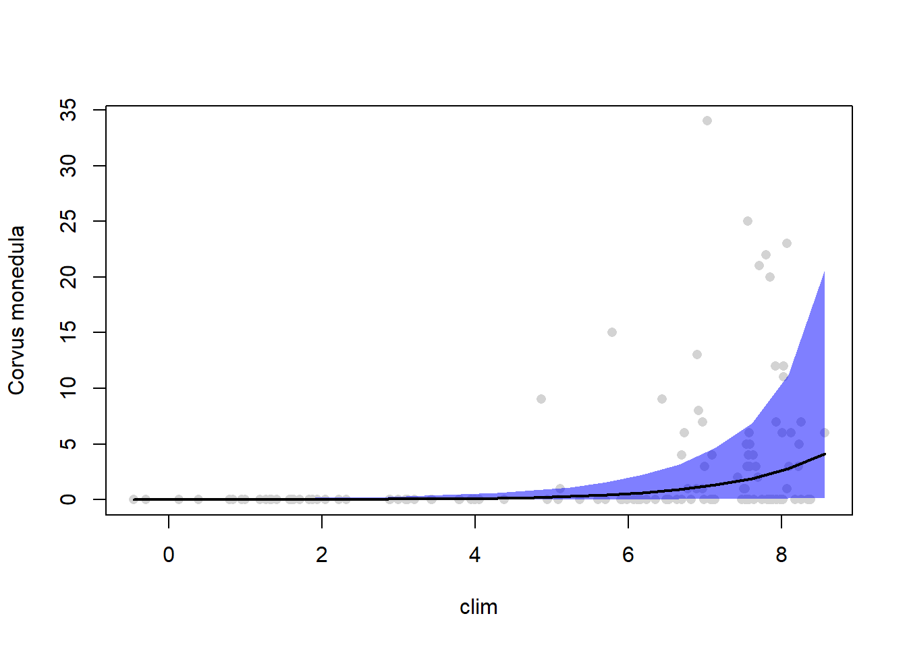
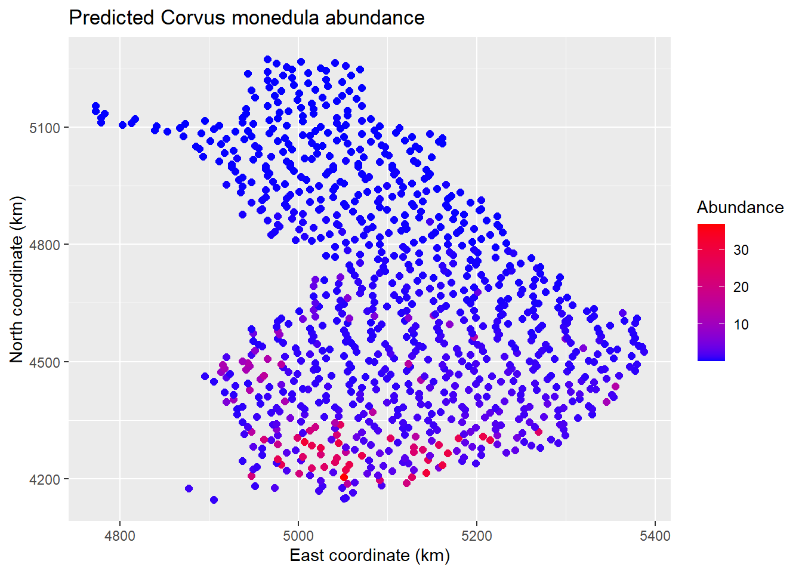
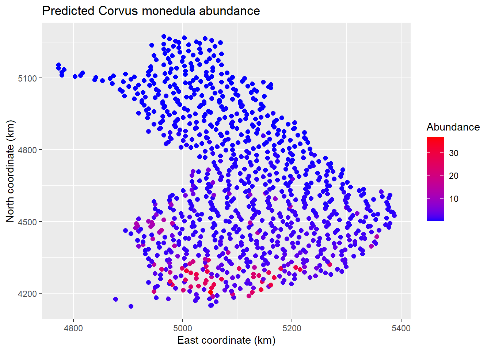

#TODO where did I get the Data from?
#TODO add link to multispecies exampleIntro text
To run this code you will need to install the pacman R package beforehand but this will take care of all the other packages required.
if(!require(pacman)) install.packages("pacman")
p_load(abind, data.table, dplyr, ggplot2, here, kableExtra, Hmsc, magrittr)We use the Finnish bird data that are also often used by the creators of HMSC to demonstrate the package (e.g. here and here). In this example we will focus on a single species, the Western Jackdaw (Corvus monedula). You can find an example with a joint species distribution model, that makes use of all features of HMSC, here. We also look at just one year (2014) while the data set contains the year 2006 to 2014.
data = fread(file.path(data.directory, "data.csv"))
data = data[Year == 2014]
data %<>% droplevels()
XData = as.data.frame(data[, c("Habitat", "AprMay")])
names(XData) = c("hab", "clim")
Y = as.matrix(data$Corvus_monedula)
colnames(Y) = "Corvus monedula"
xy = as.matrix(data[, c("x", "y")])
studyDesign = data.frame(route = factor(data$Route))
rownames(xy) = studyDesign[, 1]
rL = HmscRandomLevel(sData = xy)
XFormula = ~ hab + poly(clim, degree = 2, raw = TRUE)In the next step we define the model using the Hmsc function. EXPLAIN ARGUMENTS
m_full = Hmsc(Y=Y,
XData=XData,
XFormula=XFormula,
distr = "lognormal poisson",
studyDesign = studyDesign,
ranLevels=list(route=rL))Ok now lets have a look at the object we created by defining the model. From the environment pane we can already see that it is has the class Hmsc. If we type in the object name a string is returned giving the number of sampling units, species, environmental covariates, traits and random levels. If we were to use str() to have a closer look at the structure of the object we would see that it is actually a list of, in this case, 71 objects.
m_full## Hmsc object with 137 sampling units, 1 species, 7 covariates, 1 traits and 1 random levelsNext comes the truly time consuming step: fitting the model with Markov Chain Monte Carlo.
nChains = 2
thin = c(5, 10, 100)
nParallel = max(round(parallel::detectCores() / 2),
nChains)
samples = 1000
transient = 500 * thin
verbose = 500 * thin
for (i in seq_along(thin)) {
model[[i]] = sampleMcmc(
m_full,
thin = thin[i],
samples = samples,
transient = transient,
nChains = nChains,
verbose = verbose,
initPar = "fixed effects"
)
}mpost=list()
for (i in seq_along(model)) {
mpost[[i]] = convertToCodaObject(model[[i]],
spNamesNumbers = c(T, F),
covNamesNumbers = c(T, F))
}
plot(mpost[[1]]$Beta[,1:3])plot(mpost[[2]]$Beta[,1:3])plot(mpost[[3]]$Beta[,1:3])
Based on these plots we can clearly see that using a thinning of 100 is necessary for satisfactory MCMC convergence. In addition to these visual checks we can also look at the potential scale reduction factor (aka Gelman statistic) and the effective samples size.
ess.beta = effectiveSize(mpost[[3]]$Beta)| ess | |
|---|---|
| (Intercept) | 110.1091 |
| habCo | 433.1376 |
| habOp | 593.9599 |
| habUrb | 787.8184 |
| habWe | 236.7238 |
| poly(clim, degree = 2, raw = TRUE)1 | 184.9870 |
| poly(clim, degree = 2, raw = TRUE)2 | 404.2062 |
psrf.beta = gelman.diag(mpost[[3]]$Beta,
multivariate = FALSE)$psrf| psrf.Point.est. | psrf.Upper.C.I. | |
|---|---|---|
| (Intercept) | 1.0598018 | 1.133281 |
| habCo | 0.9995814 | 1.000565 |
| habOp | 1.0024632 | 1.007084 |
| habUrb | 0.9996922 | 1.001133 |
| habWe | 1.0000163 | 1.000624 |
| poly(clim, degree = 2, raw = TRUE)1 | 1.0750217 | 1.261937 |
| poly(clim, degree = 2, raw = TRUE)2 | 1.0630630 | 1.245347 |
Next we evaluate the model fit. HMSC has a custom function that computes several goodness-of-fit metrics
MF = list()
for (i in 1:3){
preds = computePredictedValues(model[[i]], expected = FALSE)
MF[[i]] = evaluateModelFit(hM = model[[i]], predY = preds)
}
metrics = names(MF[[1]])
values =
append(unlist(MF[[1]]),
append(unlist(MF[[2]]),
unlist(MF[[3]])))
dt_MF = tibble(
value = values,
metric = rep(metrics,
times = 3),
thinning = factor(rep(c(5,10,100), each = length(MF[[1]])))
)
dt_MF %>%
ggplot(aes(x=metric, y=value,col=thinning)) +
geom_point() We can use variance partitioning to see how important sets how variables are in determining the abundance of Corvus monedula. First we group all covarites into one of two groups: habitat or climate. In our example the number of covariates is quite low and each group basically represents one variable. The group habitat represents the factor habitat with all its dummy-variable levels and the group climate second order polynomial of April temperatures.
Again we are interested in the results for all three models, to see whether the non-convergent models perform differently.
We can use variance partitioning to see how important sets how variables are in determining the abundance of Corvus monedula. First we group all covarites into one of two groups: habitat or climate. In our example the number of covariates is quite low and each group basically represents one variable. The group habitat represents the factor habitat with all its dummy-variable levels and the group climate second order polynomial of April temperatures.
Again we are interested in the results for all three models, to see whether the non-convergent models perform differently.
groupnames = c("habitat", "climate")
group = c(1,1,1,1,1,2,2)
VP = list()
for (i in 1:3){
VP[[i]] = computeVariancePartitioning(model[[i]],
group = group,
groupnames = groupnames)
}
dt_VP = tibble(
variable = rep(c("habitat", "climate", "Random:route"), times=3),
value= c(c(VP[[1]]$vals), c(VP[[2]]$vals), c(VP[[3]]$vals)),
thinning = factor(rep(c(5,10,100), each = 3))
)
dt_VP %>%
ggplot(aes(x=variable, y=value,col=thinning)) +
geom_point()
Lastly we will predict the portability of occurrence and the abundance of Corvus monedula. First along hypothetical gradients of covariates and afterwards across a grid of Finnland.
m = model[[3]]
m$XData$hab %<>% factor()
Gradient = constructGradient(m,
focalVariable = "clim",
non.focalVariables = list(hab = 1))
predY = predict(m,
Gradient = Gradient,
expected = TRUE)
plotGradient(m,
Gradient,
pred = predY,
measure = "Y",
index = 1,
showData = TRUE)## [1] 1Gradient2 = constructGradient(m,
focalVariable = "clim",
non.focalVariables = list(hab = 2))## # weights: 15 (8 variable)
## initial value 220.492994
## iter 10 value 160.509875
## iter 20 value 158.882636
## final value 158.882627
## convergedpredY2 = predict(m,
Gradient = Gradient2,
expected = TRUE)
plotGradient(m,
Gradient2,
pred = predY2,
measure = "Y",
index = 1,
showData = TRUE)
## [1] 1The prediction performance can be evaluated with cross-validation.
# Create partitions (folds)
partition = list()
MF = list()
for (i in 1:3){
partition = createPartition(model[[i]],
nfolds = 2,
column = "route")
preds = computePredictedValues(model[[i]],
partition = partition)
MF[[i]] = evaluateModelFit(hM = model[[i]], predY = preds)
rm(partition, preds)
}dt_MF = data.table(
variable = rep(c("RMSE", "SR2", "O.AUC", "O.TjurR2", "O.RMSE", "C.SR2", "C.RMSE"), times=3),
value= unlist(lapply(MF, unname)),
thinning = factor(rep(c(5,10,100), each = 7))
)
dt_MF[!variable %in% c("RMSE", "C.RMSE"), value := value * 10]
dt_MF %>%
ggplot(aes(x=variable, y=value,col=thinning)) +
geom_point()
 

m = model[[3]]
grid = read.csv(file.path(data.directory,
"grid_1000.csv"))
grid = droplevels(subset(grid, !(Habitat=="Ma")))
xy.grid = as.matrix(cbind(grid$x, grid$y))
XData.grid = data.frame(hab = grid$Habitat,
clim = grid$AprMay)
Gradient = prepareGradient(m, XDataNew = XData.grid,
sDataNew = list(route = xy.grid))
predY = predict(m, Gradient = Gradient)
EpredY = apply(abind(predY,along = 3), c(1,2), mean)
EpredO = apply(abind(predY,along = 3), c(1,2), FUN =
function(a) {mean(a > 0)})
mapData=data.frame(xy.grid, EpredY,EpredO)
names(mapData)=c("xCoordinates", "yCoordinates", "PredictedAbundance", "PredictedOccurence")
spO <- ggplot(data = mapData,
aes(x= xCoordinates,
y= yCoordinates,
color=PredictedOccurence)
) +
geom_point(size=2)
spC <- ggplot(data = mapData,
aes(x= xCoordinates,
y= yCoordinates,
color=PredictedAbundance)
) +
geom_point(size=2)
spO +
ggtitle("Predicted Corvus monedula occurrence") +
xlab("East coordinate (km)") +
ylab("North coordinate (km)") +
scale_color_gradient(low = "blue",
high="red",
name ="Occurrence probability")
spC +
ggtitle("Predicted Corvus monedula abundance") +
xlab("East coordinate (km)") +
ylab("North coordinate (km)") +
scale_color_gradient(low = "blue",
high="red",
name ="Abundance")